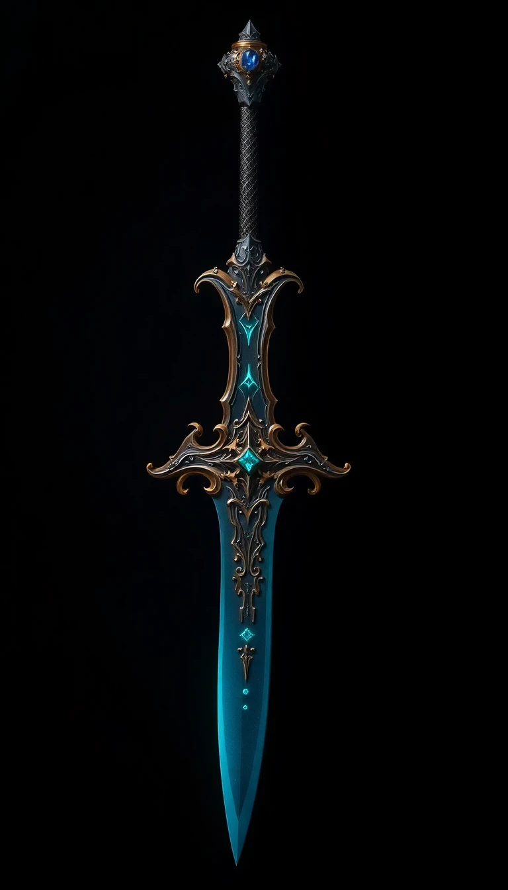
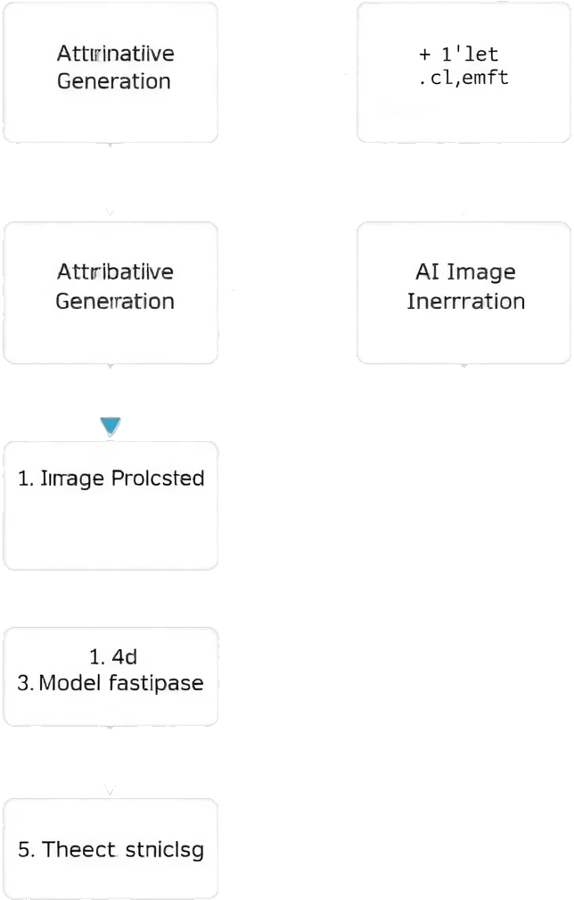
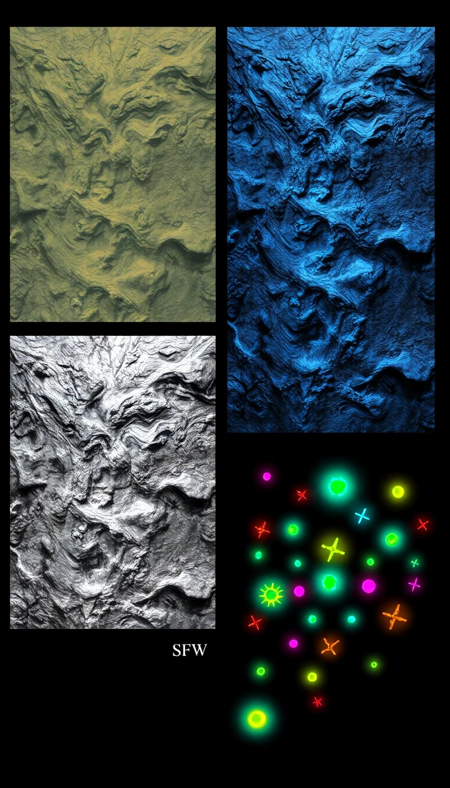

Technical Overview for Developers and Players
This technical document serves as a comprehensive guide to our sword generation and rendering pipeline. It details the entire process from concept generation through AI-powered image creation to final 3D rendering in-game using Three.js. The intended audience includes:

Fig 1. Example of a procedurally generated sword with custom attributes
The sword generation pipeline consists of five major components working in sequence:

Fig 2. Workflow diagram of the complete sword generation pipeline
Each sword begins as a collection of procedurally generated attributes that define its appearance and properties.
Attributes are generated using weighted random selection from predefined pools, with consideration for internal consistency. For example, an ancient sword is more likely to have weathering effects, while a magical sword may have ethereal glow properties.
// Simplified example of attribute generation logic
function generateSwordAttributes() {
const rarity = weightedRandom(['common', 'uncommon', 'rare', 'legendary']);
const material = selectMaterialByRarity(rarity);
const age = calculateAge(material, rarity);
const magicalProperties = assignMagicalProperties(rarity);
return {
physical: { length, width, weight, material },
visual: { colorScheme, decorationStyle, weathering },
magical: magicalProperties,
history: { age, culture, previousOwners }
};
}
The generated attributes are translated into prompts for our AI image generation system.
Attributes are converted to natural language prompts with careful attention to descriptive language that guides the AI toward the desired visual outcome. The system uses prompt templates with slots for attribute values.
// Example of prompt construction
function buildImagePrompt(attributes) {
return `Create a detailed image of a ${attributes.physical.length} ${attributes.physical.material} sword with
${attributes.visual.decorationStyle} styling. The blade should appear ${attributes.visual.weathering}
with ${attributes.magical.element} ${attributes.magical.enchantmentLevel > 3 ? 'strongly glowing' : 'faintly glowing'} runes.`;
}
We utilize the websim/ai-inference ability to access state-of-the-art image generation models. The system is configured with specific parameters:
// Example of AI image generation using websim/ai-inference
async function generateSwordImage(swordAttributes) {
// Build the prompt from attributes
const prompt = buildImagePrompt(swordAttributes);
// Define negative prompt to avoid common issues
const negativePrompt = "blurry, distorted proportions, broken blade, unrealistic materials, low quality, cartoon style";
try {
// Generate the image using websim.imageGen
const result = await websim.imageGen({
prompt: prompt,
negative_prompt: negativePrompt,
width: 1024,
height: 1024,
seed: generateSeedFromAttributes(swordAttributes), // For consistency in regeneration
});
// Download the image for processing
const response = await fetch(result.url);
const blob = await response.blob();
// Convert to image data for processing
return createImageBitmap(blob);
} catch (error) {
console.error("Error generating sword image:", error);
// Fallback to default sword image if generation fails
return loadDefaultSwordImage(swordAttributes.rarity);
}
}
// Helper function to generate a deterministic seed from sword attributes
function generateSeedFromAttributes(attributes) {
// Create a string hash from key attributes
const attributeString = `${attributes.physical.material}-${attributes.visual.decorationStyle}-${attributes.magical.element}-${attributes.magical.enchantmentLevel}`;
// Simple hash function to generate a numeric seed
let hash = 0;
for (let i = 0; i < attributeString.length; i++) {
const char = attributeString.charCodeAt(i);
hash = ((hash << 5) - hash) + char;
hash = hash & hash; // Convert to 32bit integer
}
// Return positive integer
return Math.abs(hash);
}
AI-generated images require post-processing to make them suitable for game integration.
The sword images are isolated from their backgrounds using a combination of computer vision techniques:
Multiple texture maps are extracted from the processed image:

Fig 3. The four essential texture maps extracted from a processed sword image
// Example of texture map generation
async function extractTextureMaps(processedImage) {
// Extract base diffuse map
const diffuseMap = await processImage(processedImage, 'diffuse');
// Generate normal map from diffuse using height information
const normalMap = await generateNormalMap(diffuseMap);
// Create metallic map based on material properties
const metallicMap = await generateMetallicMap(diffuseMap, swordAttributes.physical.material);
// Create emissive map for magical effects
const emissiveMap = await generateEmissiveMap(diffuseMap, swordAttributes.magical);
return {
diffuse: diffuseMap,
normal: normalMap,
metallic: metallicMap,
emissive: emissiveMap
};
}
The processed images are used to create or modify 3D models for in-game use.
Based on the sword's attributes, an appropriate base mesh is selected from a library of pre-created sword templates. This provides the basic geometry upon which details will be applied.
The base mesh is then modified according to the sword's unique properties:
The processed texture maps are applied to the 3D model through careful UV mapping, ensuring textures align properly with the geometry.
// Example of 3D model generation process
async function create3DModel(attributes, textureMaps) {
// Select base mesh template
const baseMesh = selectBaseMesh(attributes.physical.type);
// Apply scaling and modifications
const modifiedMesh = modifyMesh(baseMesh, attributes.physical);
// Create material using the texture maps
const material = createPBRMaterial(textureMaps);
// Apply UV mapping
applyUVMapping(modifiedMesh, material);
return {
geometry: modifiedMesh,
material: material
};
}
The final stage involves rendering the 3D sword model in the game environment using Three.js.
The sword model and its textures are loaded into Three.js, with special attention to memory management for performance optimization.
PBR (Physically Based Rendering) materials are configured to take advantage of Three.js lighting systems:
Interactive elements are added to allow players to examine and interact with their swords:
// Example of Three.js integration
function setupSwordInThreeJS(swordModel) {
// Create scene and camera
const scene = new THREE.Scene();
const camera = new THREE.PerspectiveCamera(75, window.innerWidth / window.innerHeight, 0.1, 1000);
camera.position.z = 5;
// Add appropriate lighting
const ambientLight = new THREE.AmbientLight(0x404040);
scene.add(ambientLight);
const directionalLight = new THREE.DirectionalLight(0xffffff, 0.5);
directionalLight.position.set(1, 1, 1);
scene.add(directionalLight);
// Add the sword model to the scene
scene.add(swordModel);
// Setup special effects if needed
if (swordModel.hasEmissiveElements) {
setupGlowEffect(swordModel, scene);
}
// Setup interactive controls
const controls = new THREE.OrbitControls(camera, renderer.domElement);
controls.enableZoom = true;
controls.enablePan = false;
// Animation loop
function animate() {
requestAnimationFrame(animate);
controls.update();
renderer.render(scene, camera);
}
animate();
}
Once generated, swords are stored in the game's inventory system using a structured JSON format.
Each sword is represented by a comprehensive JSON object that contains all necessary information:
// Example of sword data JSON structure
{
"id": "e7c8a12b-3d9f-4e7a-8f1d-25a9e02e6c15",
"name": "Frostbite",
"type": "longsword",
"rarity": "legendary",
"level": 42,
"physical": {
"length": 120, // in cm
"weight": 2.5, // in kg
"material": "enchanted_steel",
"durability": 950,
"damage": {
"base": 75,
"type": "slashing"
}
},
"visual": {
"colorScheme": "ice_blue",
"decorationStyle": "nordic",
"weathering": "pristine",
"inscriptions": true
},
"magical": {
"element": "ice",
"enchantmentLevel": 5,
"effects": [
{
"type": "frost_damage",
"value": 25,
"duration": 5 // in seconds
},
{
"type": "movement_slow",
"value": 30, // percentage
"duration": 3 // in seconds
}
]
},
"history": {
"age": 347, // in years
"culture": "northern_realm",
"previousOwners": [
"Jormund the Frost King",
"Valeria Iceheart"
],
"lore": "Forged in the eternal ice of the Northern Peaks..."
},
"assets": {
"thumbnail": "swords/e7c8a12b/thumbnail.png",
"fullImage": "swords/e7c8a12b/full.png",
"model": "swords/e7c8a12b/model.glb",
"textures": {
"diffuse": "swords/e7c8a12b/textures/diffuse.jpg",
"normal": "swords/e7c8a12b/textures/normal.jpg",
"metallic": "swords/e7c8a12b/textures/metallic.jpg",
"emissive": "swords/e7c8a12b/textures/emissive.jpg"
}
},
"gameplay": {
"requiredLevel": 38,
"requiredStrength": 45,
"specialMoves": [
"frost_nova",
"ice_slash"
],
"cooldowns": {
"frost_nova": 30, // in seconds
"ice_slash": 15 // in seconds
}
},
"metadata": {
"createdAt": "2023-11-15T08:24:31Z",
"generationSeed": "78a92c4fd13e",
"version": "2.4.1"
}
}
Sword data is stored in a NoSQL database for flexibility, with appropriate indexing for quick retrieval during gameplay.
When a player acquires a sword, references to the sword data are added to their inventory, with provisions for:
Several techniques are employed to ensure the system performs well even with many unique swords:
To avoid regenerating swords unnecessarily:
For multiplayer scenarios:
The sword generation pipeline is designed to be extensible. Planned future enhancements include:
For developers working with this system, the following prerequisites are needed:
End users of the game will need:
The sword generation and rendering pipeline represents a sophisticated approach to creating unique, visually appealing, and functionally diverse weapons for our game. By leveraging AI-powered image creation, advanced image processing, and Three.js rendering, we're able to offer players an almost unlimited variety of distinctive swords that enhance both gameplay and aesthetic experience.
This documentation serves as both a technical reference and a blueprint for future extensions to the system. As technology evolves, so too will our approach to procedural content generation.